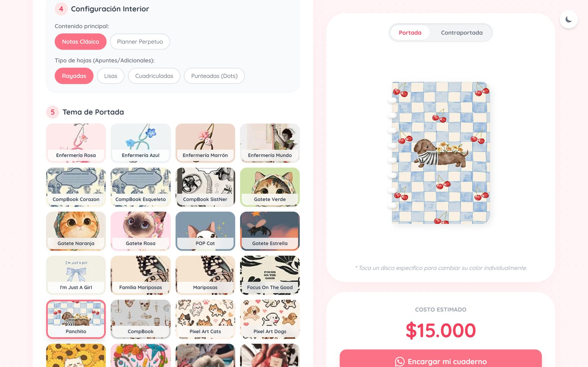

Tamaño y sujeción
A4, A5, A6 o ficha N3, con los discos a la izquierda o arriba.
 Nicolas Sgandurra
Nicolas Sgandurra
Sitios web
Un cuaderno a medida, elegido paso a paso, con la vista previa y el precio al lado.

Cuackdernos vende cuadernos de discos personalizados. El sitio reemplaza el ida y vuelta de mensajes por un configurador: la persona elige cada parte, ve cómo queda y manda el pedido armado por WhatsApp.
Un emprendimiento de cuadernos de discos armaba cada pedido por mensaje, preguntando tamaño, hojas, portada y colores uno por uno.
A4, A5, A6 o ficha N3, con los discos a la izquierda o arriba.
Discos de 24 o 32 mm, según la cantidad de hojas.
Notas o planner perpetuo, con hojas rayadas, lisas, cuadriculadas o punteadas.
Una galería de diseños y la opción de usar uno propio.
Un color para todos o uno distinto para cada disco, tocándolo en la vista previa.
Calcula un costo estimado y arma el mensaje de WhatsApp con todo lo elegido.

Al elegir una portada, la vista previa del cuaderno cambia al instante y el costo se actualiza abajo.
Las opciones que ofrece el emprendimiento y las preguntas que se repetían en cada pedido.
Una estética de cuaderno, cálida y con modo oscuro, pensada primero para el celular.
Sitio estático en Firebase Hosting, con el pedido resuelto por WhatsApp.
Publicado en cuackdernos.web.app. Desarrollo propio.
El sitio está publicado y se puede probar. Si querés algo parecido para tu emprendimiento, escribime.